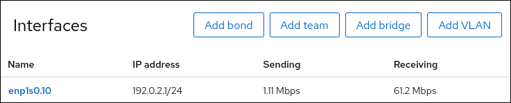

Configuring VLAN tagging by using the RHEL web console
-
The interface you plan to use as a parent to the virtual VLAN interface supports VLAN tags.
-
If you configure the VLAN on top of a bond interface:
-
The ports of the bond are up.
-
The bond is not configured with the
fail_over_mac=followoption. A VLAN virtual device cannot change its MAC address to match the parent’s new MAC address. In such a case, the traffic would still be sent with the incorrect source MAC address. -
The bond is usually not expected to get IP addresses from a DHCP server or IPv6 auto-configuration. Ensure it by disabling the IPv4 and IPv6 protocol creating the bond. Otherwise, if DHCP or IPv6 auto-configuration fails after some time, the interface might be brought down.
-
-
The switch, the host is connected to, is configured to support VLAN tags. For details, see the documentation of your switch.
-
You have installed the RHEL 9 web console.
-
You have enabled the cockpit service.
-
Your user account is allowed to log in to the web console.
For instructions, see Installing and enabling the web console.
You can configure VLAN tagging if you prefer to manage network settings using a web browser-based interface in the RHEL web console.
-
Select the
Networkingtab in the navigation on the left side of the screen, and check if there is incoming and outgoing traffic on the interface: